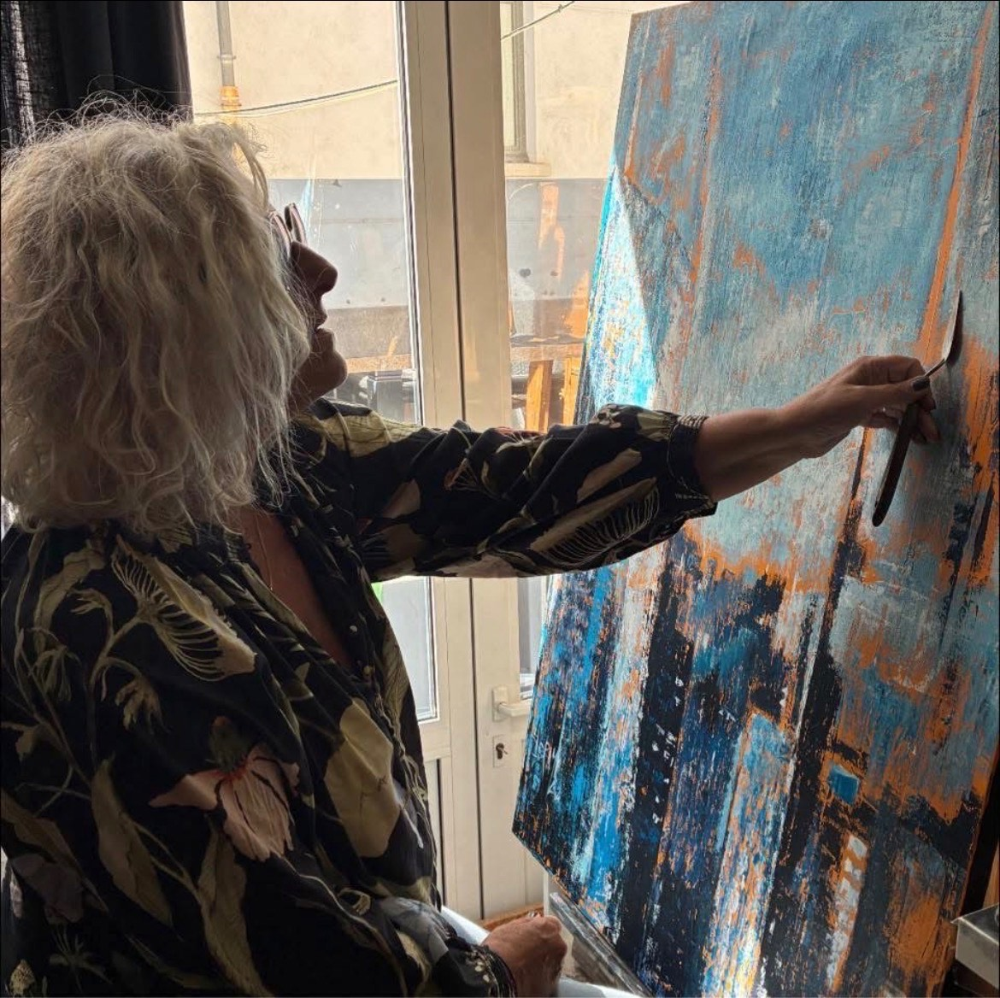

À propos
Rencontre avec l'artiste.

Artiste peintre
Mon travail artistique est avant tout une exploration du vivant. À travers le dessin, la peinture et, ponctuellement, la sculpture, je cherche à saisir ce qui anime les êtres et les choses : une présence, une expression, une émotion, une lumière.
Le dessin occupe une place essentielle dans ma démarche. Il est le fondement de mon travail, le langage qui me permet d'observer, de comprendre et de traduire le monde qui m'entoure. La peinture vient ensuite enrichir cette recherche par la couleur, les nuances et les jeux de lumière qui donnent profondeur et émotion au sujet.
Partage et transmission
Parallèlement à ma création personnelle, je dirige des ateliers d'art. J'y enseigne les techniques du dessin et de la peinture, avec l'ambition de transmettre mon savoir-faire et d'accompagner chacun dans la découverte de sa propre sensibilité artistique.
Découvrir les ateliers« Je ne peins pas ce que je vois, je peins ce que la lumière me souffle. »
Formations
- Diplôme des Beaux-Arts de Paris
- Stage de peinture à l'huile auprès de maîtres contemporains
- Formation à l'aquarelle botanique
Expositions passées
- 2025 — Exposition collective « Couleurs d'ici », Paris
- 2024 — Exposition personnelle « Lumières », galerie du 11e
- 2023 — Salon des artistes indépendants